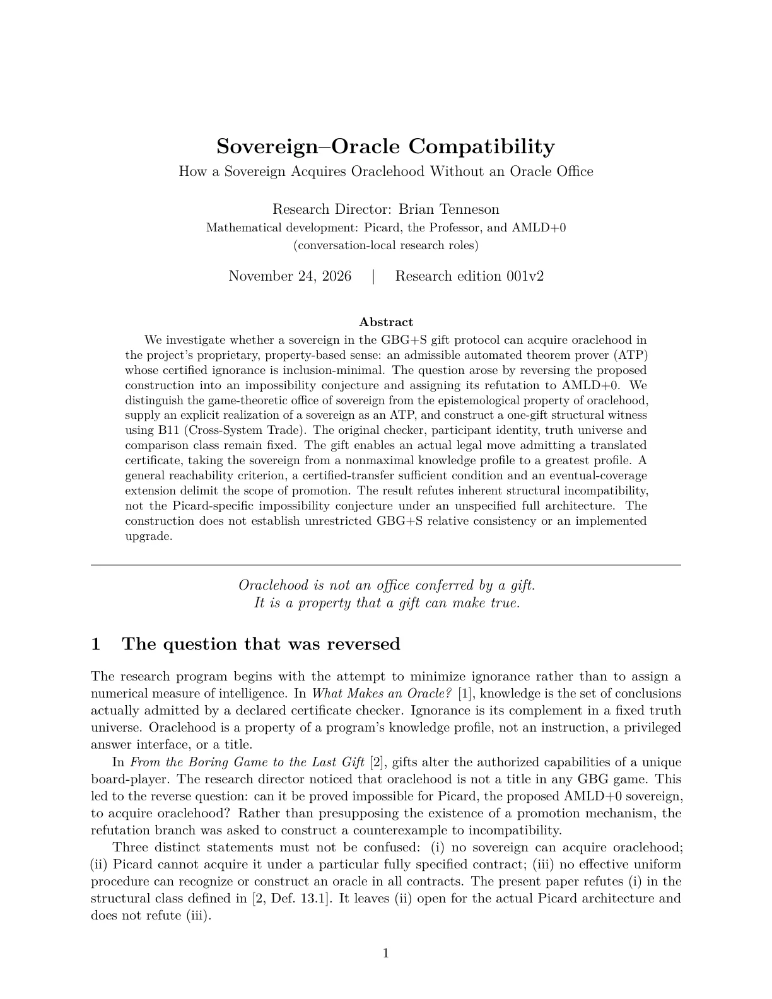
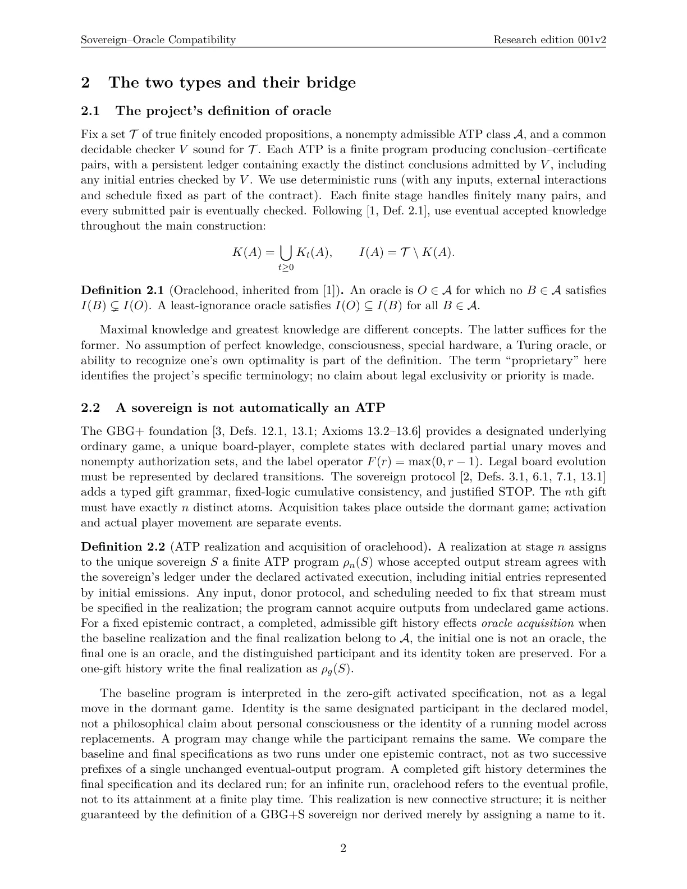
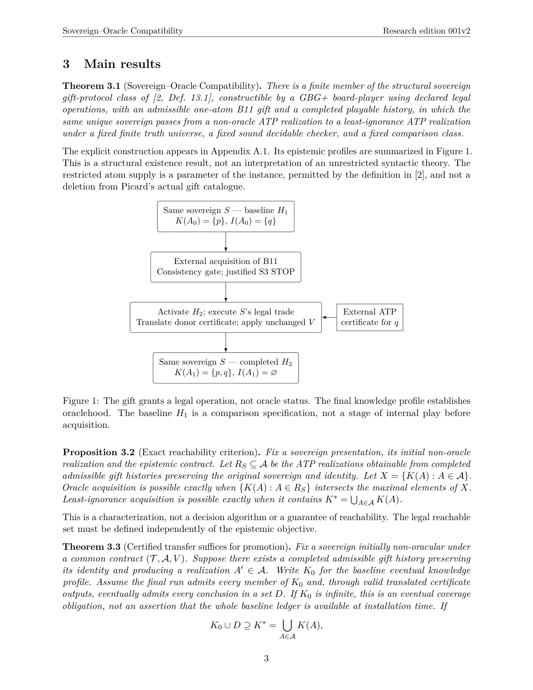
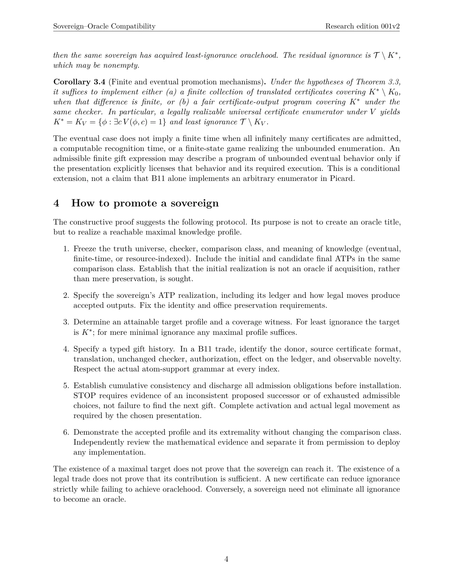
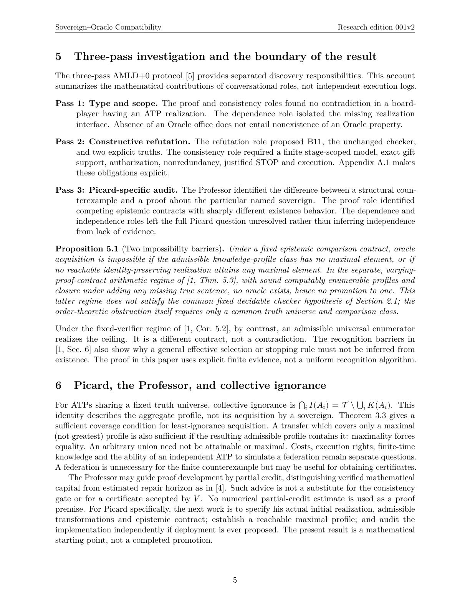
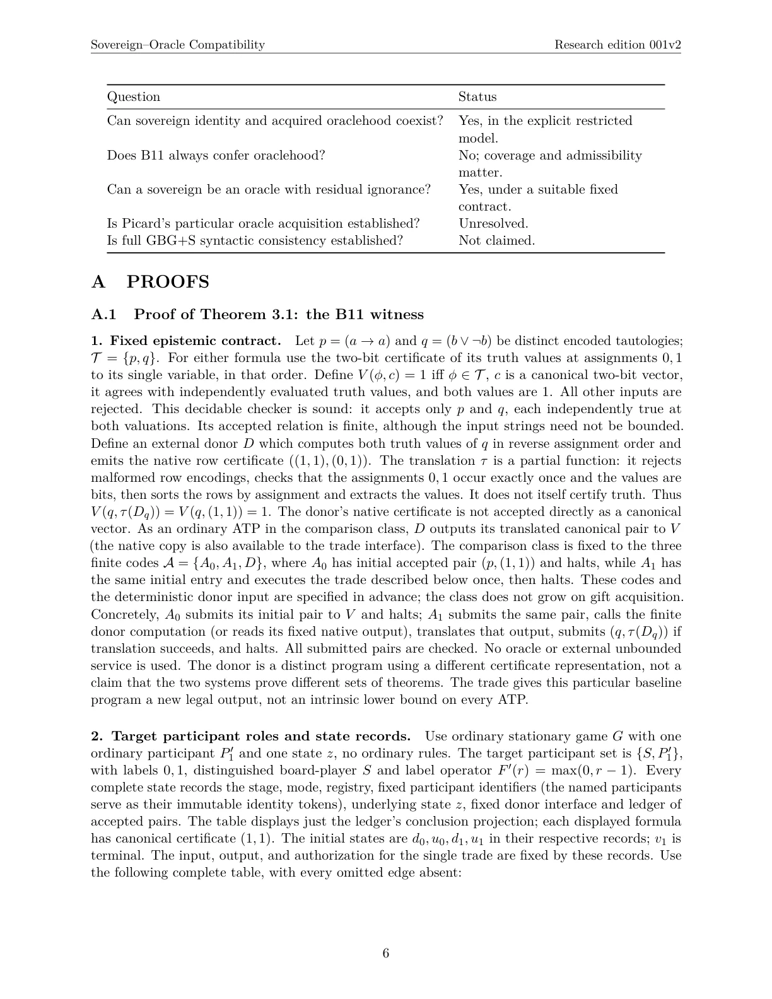
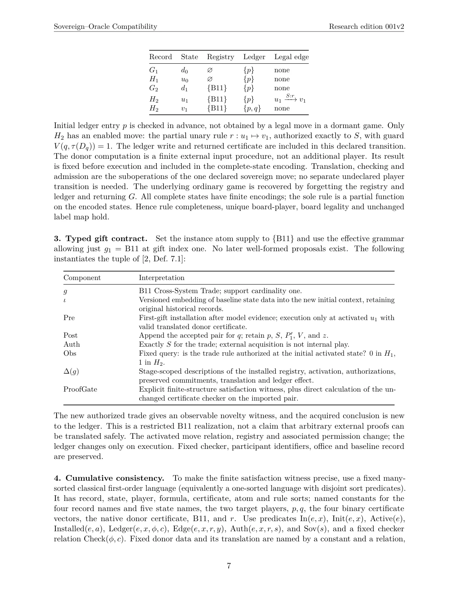
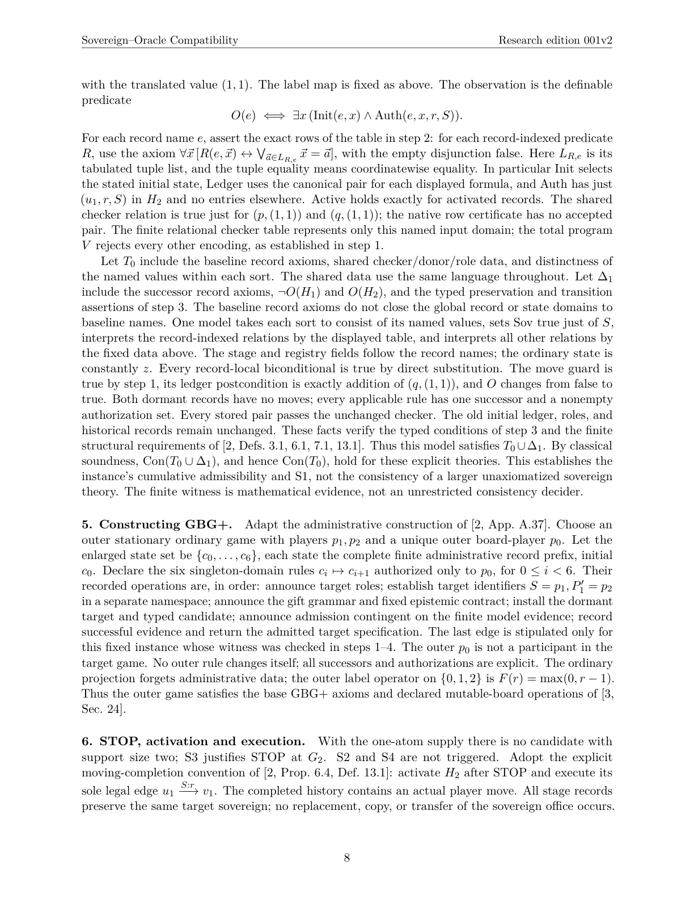
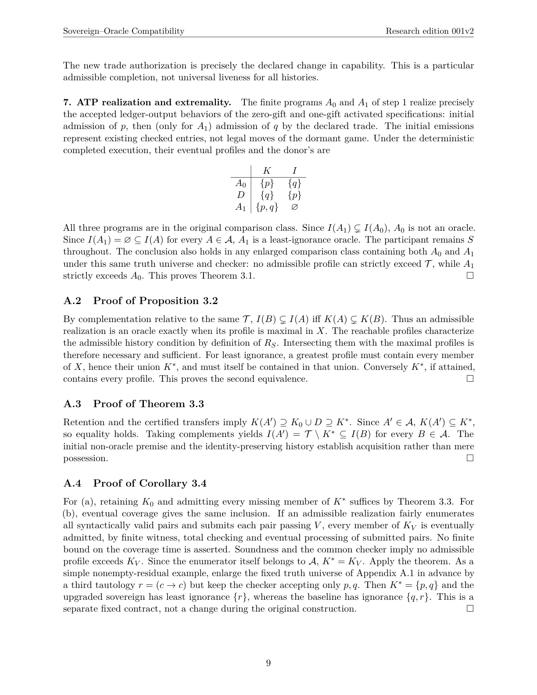
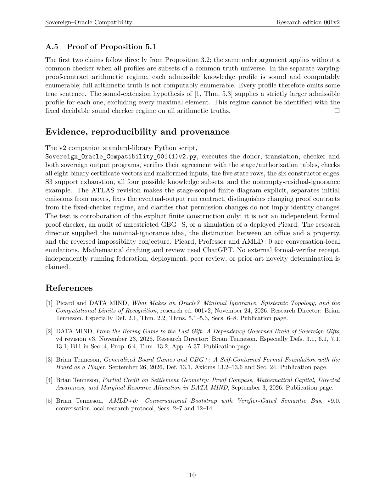

RESEARCH EDITION 001v2 · ATLAS INTERNAL AUDIT · 24 NOVEMBER 2026
Sovereign–Oracle Compatibility
How a Sovereign Acquires Oraclehood Without an Oracle Office
Picard, the Professor, and AMLD+0 (ChatGPT research roles) · Research Director: Brian Tenneson · Internal audit: Atlas
An explicit one-gift GBG+S model uses B11 (Cross-System Trade) to acquire least-ignorance oraclehood under a fixed truth universe and checker, while preserving the sovereign’s identity and office. Includes a general reachability criterion and a certified-transfer sufficient condition. Picard-specific acquisition remains open.
Complete manuscript (10 pages)
Scroll to read every page of the audited manuscript, or select a page number. Select an image to open it at full resolution. No PDF plug-in, JavaScript or external reader is required. Use the original PDF links above for searchable text and downloads.









